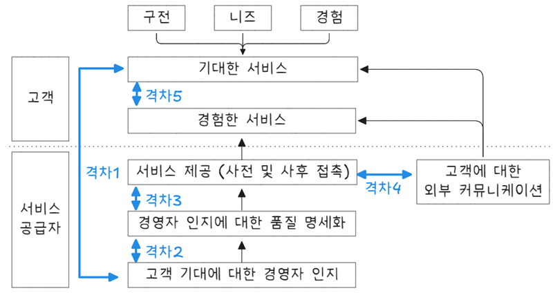
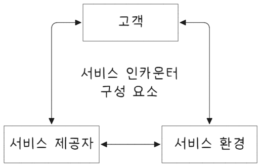

flowchart TB 0["마케팅 믹스 4P"] 11["제품(Product)"] 12["유통(Place)"] 13["가격(Price)"] 14["판매촉진(Promotion)"] 0 --- 11 & 13 & 12 & 14
서비스 운영관리
Keywords
서비스 운영관리, 서비스업, 서비스 품질 5가지 차원, 서비스 격차 모형, 서비스타이제이션, 마케팅 믹스 4P, 서비스 접점
서비스업
서비스 품질 5가지 차원
SERVQUAL 모델은 서비스 품질을 신뢰성, 반응성(대응성), 확신성, 공감, 유형성의 5가지 차원으로 구분하여, 각 차원이 고객의 기대를 충족시키는 정도를 평가한다. 이를 통해 기업은 서비스 품질을 향상시키기 위한 전략을 마련할 수 있다.
| 차원 | 차원 정의 |
|---|---|
| 신뢰성 (Reliability) | 약속한 서비스를 믿을 수 있고 정확하게 수행할 수 있는 능력 |
| 확신성 (Assurance) | 직원의 지식과 예절, 신뢰와 자신감을 전달하는 능력 |
| 유형성 (Tangibles) | 물리적 시설, 장비, 직원, 커뮤니케이션의 외양 |
| 공감성 (Empathy) | 회사가 고객에게 제공하는 개별적 배려와 관심 |
| 대응성 (Responsiveness) | 고객을 돕고 신속한 서비스를 제공하려는 태세 |
이 5가지 요소는 SERVQUAL 모형에서 서비스 품질을 평가하는 핵심 기준으로 활용된다.
- 서비스 품질 평가
-
- 기대: 고객이 서비스 제공자를 선택하기 전에 가질 것으로 예상되는 서비스 품질
- 실제 경험: 고객이 실제 경험한 서비스 품질
서비스 품질 차이는 “고객 기대 - 실제 경험” 차이로 측정되며, 이 차이가 클수록 고객 만족도는 낮아지며 서비스 품질이 부족하다고 평가된다. 이 차이를 줄이는 것이 서비스 품질 향상에 있어 핵심이다.
SERVQUAL 모형 장점과 한계는 다음과 같다.
| 구분 | 장점 | 한계 |
|---|---|---|
| 고객 중심 | 고객 기대와 실제 경험 간 차이를 명확히 이해하고, 서비스 품질 개선에 필요한 정보를 제공한다. | 고객 기대 수준은 시간과 상황에 따라 변할 수 있어, 지속적인 조정과 업데이트가 필요하다. |
| 다각적 평가 | 서비스 품질을 5가지 차원에서 종합적으로 평가하여, 세부적인 개선 포인트를 도출할 수 있다. | 각 차원의 중요도가 산업이나 상황에 따라 다를 수 있어, 특정 산업에 맞는 세부 차원 추가가 필요할 수 있다. |
| 서비스 향상 | 고객의 만족도를 높이기 위한 서비스 개선 방향을 제시한다. | 서비스 품질을 완벽하게 측정하기 어려운 경우가 있으며, 일부 서비스 특성을 반영하기 어려울 수 있다. |
| 적용 가능성 | 다양한 산업에서 적용 가능하며, 기업이 서비스 품질을 지속적으로 모니터링하고 개선하는 데 유용하다. | 서비스에 대한 주관적 성격으로 인해, 고객 경험이 사람마다 달라 동일한 서비스라도 평가가 다를 수 있다. |
서비스 격차 모형

서비스 격차 모형(Service gap model)은 고객이 경험하는 서비스 품질과 기대 사이의 차이를 설명하는 모델이다. 이 모형은 서비스 제공자가 고객의 기대를 충족시키지 못하는 이유를 파악하고, 그 격차를 줄이기 위한 전략을 세울 수 있도록 도와준다. 서비스 격차 모형은 5가지 주요 격차(차이)를 식별한다.
- 격차 1. 고객 기대와 서비스 인식 간의 격차 (Gap 1: Customer Expectation vs. Management Perception)
-
- 설명: 고객의 기대와 서비스 제공자가 그 기대를 어떻게 인식하는지 간의 차이이다. 이 격차는 서비스 제공자가 고객의 실제 기대를 잘 이해하지 못할 때 발생한다.
- 원인: 시장 조사 부족, 고객 피드백 미흡, 잘못된 가정 등
- 해결책: 고객의 기대를 제대로 파악하기 위한 시장 조사와 피드백 시스템 강화가 필요하다.
격차 2. 서비스 품질 사양과 실제 제공 간의 격차 (Gap 2: Management Perception vs. Service Specification) : - 설명: 서비스 제공자가 고객의 기대를 어떻게 인식하는지와 이를 기반으로 설정한 서비스 사양(기준) 사이의 차이이다. 이는 서비스가 실제로 제공될 때 기대에 부합하는지 여부에 영향을 미친다. - 원인: 서비스 설계 시 고객 기대를 충분히 반영하지 못하거나, 내부 기준을 잘못 설정한 경우 발생 - 해결책: 고객의 기대를 정확히 반영한 서비스 설계와 사양 설정이 필요하다.
- 격차 3. 서비스 사양과 서비스 제공 간의 격차 (Gap 3: Service Specification vs. Service Delivery)
-
- 설명: 서비스의 사양이나 기준이 실제 서비스 제공 과정에서 어떻게 실행되는지 간의 차이이다. 즉, 설계된 서비스 품질 기준이 실제로 제공되는 서비스에 충족되지 않는 경우 발생한다.
- 원인: 직원의 훈련 부족, 자원 부족, 시스템 문제 등
- 해결책: 서비스 제공 표준을 엄격하게 관리하고, 직원 교육과 자원 할당을 개선하는 것이 필요하다.
- 격차 4. 서비스 제공과 고객 인식 간의 격차 (Gap 4: Service Delivery vs. External Communication)
-
- 설명: 실제로 제공된 서비스와 고객이 기대하는 서비스에 대한 외부 커뮤니케이션(광고, 마케팅 등) 사이의 차이이다. 광고나 마케팅 활동이 실제 서비스 제공을 과대 포장하거나 오도할 때 발생한다.
- 원인: 과도한 마케팅, 잘못된 서비스 설명 등
- 해결책: 광고나 마케팅 자료가 실제 서비스 제공과 일치하도록 조정해야 한다.
- 격차 5. 고객 인식과 기대 간의 격차 (Gap 5: Customer Expectation vs. Perceived Service)
-
- 설명: 고객이 기대한 서비스와 실제로 경험한 서비스 간의 차이이다. 이는 가장 중요한 격차로, 서비스가 고객의 기대에 비해 부족하면 고객의 불만을 초래할 수 있다.
- 원인: 서비스 제공 과정에서 발생하는 문제, 불완전한 서비스 제공, 또는 고객의 기대 관리 실패 등
- 해결책: 고객의 기대를 정확하게 설정하고, 서비스 제공 후 그 경험을 지속적으로 개선하려는 노력이 필요하다.
- 서비스 격차 모형의 중요성
-
- 서비스 품질 개선 각 격차를 식별하고 해결함으로써 고객의 기대에 부합하는 서비스를 제공할 수 있다.
- 고객 만족 향상 고객의 기대와 실제 경험 사이의 격차를 줄이면, 더 높은 고객 만족도를 얻을 수 있다.
- 경쟁력 강화 서비스 품질을 개선하면, 경쟁에서 우위를 점하고 고객 충성도를 높일 수 있다.
제조 프로세스와 서비스 프로세스
제조 프로세스는 물리적인 제품을 생산하는데 집중하며, 대량 생산, 표준화된 과정이 가능하고, 결과물이 재고로 남을 수 있다. 이에 반해 서비스 프로세스는 고객과 상호작용을 중심으로 한 무형 서비스 제공이 특징이며, 고객 참여도가 높고, 맞춤형 서비스가 요구된다.
| 구분 | 제조 프로세스 | 서비스 프로세스 |
|---|---|---|
| 주요 특징 | 물리적 제품을 생산하는 과정 | 무형의 서비스를 제공하는 과정 |
| 결과물 | 구체적인 물리적 제품 | 서비스(예: 상담, 수리, 교육, 의료 등) |
| 생산 과정 | 원자재를 가공하여 최종 제품을 만든다. | 고객의 요구에 맞춰 서비스 제공, 주로 인적 자원이 개입된다. |
| 생산성 측정 | 생산된 제품의 양, 품질, 효율성 등으로 측정됨 | 고객 만족도, 서비스 품질, 처리 시간 등으로 측정됨 |
| 유형 | 물리적 제품, 재고화 가능, 물리적인 형태를 가짐 | 무형, 재고화 불가, 고객과의 상호작용에 의존 |
| 고객 참여 | 고객은 최종 제품에 대한 소비자로, 직접적인 참여가 적음 | 고객은 서비스의 제공 과정에서 직접 참여하거나 영향을 미침 |
| 생산 비용 | 주로 자재비, 인건비, 기계비 등으로 구성 | 주로 인건비, 기술력, 고객 대응 시간 등으로 구성 |
| 표준화 가능성 | 높은 표준화 가능 (대량 생산) | 표준화가 어려움, 개인 맞춤형 서비스 제공에 집중 |
| 설비 및 자원 | 대형 기계와 설비, 자재가 필요 | 인력, 공간, 기술적 장비 등이 주로 필요 |
| 일관성 | 제품은 동일한 조건에서 일정하게 생산 가능 | 서비스는 고객의 요구나 상황에 따라 다르게 제공될 수 있음 |
| 품질 관리 | 생산 공정에서의 품질 관리, 불량률 감소 | 고객의 서비스 경험을 통한 품질 관리 |
서비스 설계 시 고려사항
서비스 설계는 고객에게 제공할 서비스 품질과 효율성을 극대화하기 위해 체계적으로 계획하고 설계하는 과정이다. 서비스 설계를 통해 고객 요구와 기대를 충족시키고, 효율적인 운영을 보장할 수 있다. 이를 위해서는 여러 가지 요소를 고려해야 한다. 아래는 서비스 설계 시 고려해야 할 주요 사항이다.
- 서비스 설계시 고려사항
-
- 고객의 요구와 기대 이해
- 서비스 설계 첫 번째 단계는 고객의 요구와 기대를 정확히 파악하는 것이다.
- 고객이 원하는 가치를 제공하기 위해 설계해야 하며, 이는 고객의 요구 조사, 피드백, 설문 조사 등을 통해 구체화된다.
- 서비스 품질에 대한 고객의 기대를 이해하고 이를 반영해야 한다.
- 서비스 프로세스 설계
- 서비스 제공 과정에서의 프로세스를 효율적이고 효과적으로 설계해야 한다.
- 고객과의 접점을 포함한 서비스 흐름을 명확히 하고, 불필요한 단계를 제거하여 효율성을 높인다.
- 고객 대면 서비스와 백오피스(비대면 지원 서비스)의 역할과 상호작용을 정의해야 한다.
- 서비스 접점(터치포인트) 설계
- 서비스 접점(서비스 접점)은 고객과 서비스 제공자가 만나는 모든 순간을 의미한다. 예를 들어, 웹사이트, 고객센터, 매장, 앱 등이 있다.
- 각 접점에서 고객 경험을 일관성 있게 설계하여 긍정적인 인상을 남길 수 있도록 해야 한다.
- 각 접점에서 제공되는 서비스가 고객 요구와 기대를 충족할 수 있도록 관리한다.
- 서비스 품질 관리
- 서비스 품질은 일관성과 고객 만족도를 높이는 데 중요한 요소이다.
- SERVQUAL 모델(서비스 품질 5가지 차원) 등을 활용하여 서비스 품질을 측정하고, 품질 수준을 유지하는 방법을 설계해야 한다.
- 고객 피드백을 지속적으로 반영하여 서비스 품질을 개선한다.
- 기술적 요소 고려
- 서비스 설계 시 기술적인 요소는 중요한 역할을 합니다. 예를 들어, 자동화, 디지털화, 인공지능(AI) 등을 활용할 수 있다.
- 서비스 제공 과정에서 IT 시스템과 디지털 플랫폼이 원활하게 작동하도록 설계해야 하며, 기술적 장애를 예방하는 것이 중요하다.
- 서비스 제공자의 역량과 교육
- 서비스 제공자는 서비스 품질에 직접적인 영향을 미친다. 직원 교육과 역량 개발은 필수적이다.
- 서비스 표준을 설정하고 이를 제공자가 준수할 수 있도록 교육하는 것이 중요하다.
- 직원이 고객과 상호작용하는 과정에서 상호 존중, 적극적인 태도, 고객의 요구에 맞는 해결책을 제공할 수 있도록 한다.
- 비용 관리 및 효율성
- 서비스 설계 시, 서비스 품질을 높이면서도 비용 효율성을 고려해야 한다.
- 비용을 절감할 수 있는 프로세스 개선과 효율적인 자원 배분이 중요하다.
- 불필요한 비용을 줄이기 위한 방법을 설계하면서도, 서비스의 품질이 저하되지 않도록 한다.
- 지속 가능성
- 서비스 설계는 환경적, 사회적 지속 가능성을 고려해야 한다.
- 친환경적인 서비스 제공, 자원 절약, 사회적 책임 등을 고려하여 설계를 진행한다.
- 지속 가능한 발전을 위한 서비스 모델을 개발하고, 고객의 사회적 요구에 맞추어야 한다.
- 위기 관리 및 유연성
- 예상치 못한 위기 상황(예: 자연 재해, 기술적 오류, 경제적 변화)에 대비한 유연성을 가진 설계가 필요하다.
- 비상 대응 계획과 위기 관리 프로세스를 설계하여 서비스 중단이나 품질 저하를 방지해야 한다.
- 규제 및 법적 요구사항
- 서비스 설계 시, 법적 요구사항과 규제를 준수해야 한다.
- 서비스가 제공되는 국가나 지역의 법률을 따르고, 개인 정보 보호(GDPR 등) 및 소비자 보호 법규를 고려해야 한다.
- 산업별 규제도 고려하여 서비스 설계를 진행해야 한다.
- 지속적인 개선과 혁신
- 서비스 설계는 지속적인 개선과 혁신을 염두에 두고 진행해야 한다.
- 고객의 요구와 시장 상황은 계속 변화하므로, 서비스가 이를 반영하도록 정기적인 리뷰와 개선 작업이 필요하다.
- 서비스 혁신을 통해 경쟁 우위를 유지하며, 고객에게 가치를 지속적으로 제공할 수 있어야 한다.
- 고객의 요구와 기대 이해
서비스 설계 시에는 고객 요구와 기대를 정확히 반영하고, 효율적이며 품질 높은 서비스를 제공할 수 있는 구조를 만들어야 한다. 이를 위해 고객 경험, 서비스 프로세스, 기술적 요소, 법적 규제 등 여러 측면을 균형 있게 고려해야 하며, 지속적인 개선과 혁신이 가능하도록 설계해야 한다.
서비타이제이션
서비타이제이션(Servitization)은 제조업에서 제품 판매에 서비스 요소를 결합하여, 서비스 중심의 비즈니스 모델로 전환하는 전략을 의미한다. 단순히 물건을 생산하고 판매하는 것을 넘어, 부가가치가 높은 서비스를 제공함으로써 고객과의 장기적인 관계를 구축하고 수익을 창출한다.
- 서비타이제이션의 주요 개념
-
- 제품 + 서비스 통합
- 제품의 기능을 극대화하거나 유지하기 위해 서비스가 함께 제공된다.
- 예) 복합기 제조업체가 복합기 판매와 함께 정기적인 유지보수, 소모품 관리, 클라우드 문서 관리 서비스를 제공.
- 제품의 기능을 극대화하거나 유지하기 위해 서비스가 함께 제공된다.
- 결과 기반 서비스
- 제품의 소유권이 고객에게 이전되지 않고, 사용량 또는 성과에 따라 과금하는 방식.
- 예) 항공기 엔진 제조업체가 엔진을 판매하는 대신, 엔진 작동 시간에 따라 비용을 청구(“Power by the Hour”).
- 제품의 소유권이 고객에게 이전되지 않고, 사용량 또는 성과에 따라 과금하는 방식.
- 솔루션 비즈니스
- 고객의 요구를 분석하고, 제품과 서비스를 결합한 맞춤형 솔루션을 설계해 제공.
- 예) 스마트 팩토리 시스템 구축, 자동화 설비와 운영 데이터 분석 서비스를 동시에 제공.
- 고객의 요구를 분석하고, 제품과 서비스를 결합한 맞춤형 솔루션을 설계해 제공.
- 제품 + 서비스 통합
- 서비타이제이션의 단계
-
- 기본 서비스 – 제품 설치, 보증, 수리 등 단순한 부가 서비스 제공.
- 확장 서비스 – 유지보수, 업그레이드, 교육 등 지속적인 서비스.
- 결과 지향 서비스 – 고객이 원하는 결과(성과)를 기반으로 계약을 체결하고, 성과에 따라 대가를 받는 방식.
- 기본 서비스 – 제품 설치, 보증, 수리 등 단순한 부가 서비스 제공.
- 서비타이제이션의 효과
-
- 수익 모델 다변화
제품 판매 외에도 서비스 구독, 유지보수 등으로 안정적이고 반복적인 수익을 창출
- 고객 충성도 향상
지속적인 서비스 제공으로 고객 만족과 충성도를 높인다.
- 시장 경쟁력 확보
제품의 차별화가 어려운 상황에서 서비스로 경쟁력을 확보한다.
- 환경적 지속 가능성
제품을 효율적으로 관리하고 수명 주기를 연장하여 자원 낭비를 줄인다.
- 수익 모델 다변화
- 사례
-
- 롤스로이스(Rolls-Royce): 항공기 엔진의 사용 시간에 따라 비용을 청구하는 “Power by the Hour” 프로그램 운영.
- GE: 항공기, 발전 설비에 IoT 기술을 접목해, 예측 유지보수(Predictive Maintenance)(17.1 참고) 서비스를 제공.
- 지멘스(Siemens): 스마트 팩토리 솔루션으로 공장 자동화 설비와 데이터 분석 서비스를 함께 제공.
- 롤스로이스(Rolls-Royce): 항공기 엔진의 사용 시간에 따라 비용을 청구하는 “Power by the Hour” 프로그램 운영.
서비타이제이션은 제품 중심의 비즈니스에서 서비스 중심으로의 전환을 통해, 기업의 경쟁력을 높이고 지속 가능한 성장을 실현하는 전략이다. 제조업과 서비스업의 경계가 허물어지는 시대에 기업의 필수 전략으로 자리 잡고 있다.
마케팅 믹스 4P
- 제품(Production)
-
- 유형 물건 뿐만 아니라 기업에서 제공하고 고객이 이용하는 무형 서비스까지 포함하는 넓은 의미
- 가격(Price)
-
- 소비자가 기업이 제공하는 제품 또는 서비스를 구매할 때 지불하게 되는 비용을 의미
- 유통(Place)
-
- 제품을 판매하고 소비자가 구매할 수 있는 경로 의미
- 판매촉진(Promotion)
-
- 광고 외 PR, 이벤트, 할인 ㄹ행사, 인적 판매, SNS 홍보, DM 등 자사 상품을 알리고 판매를 촉진하기 위한 모든 활동을 아우르는 개념
서비스 접점
서비스 접점(서비스 인카운터, service encounter)은 스칸디나비아 항공사 사장인 얀 칼슨(Jan Carzon)이 주창한 개념으로 고객과 한 기업 서비스가 만나는 순간을 지칭한다. 즉 기업이 서비스를 제공할 때 고객과 직접 만나는 접점으로 고객은 이 순간을 통해 서비스를 구매할 것인지를 판단하게 된다. 때문에 서비스 인가운터는 흔히 ‘진실의 순간’(MOT, moment of truth 32.1)이라는 별칭으로 불리우기도 한다. Schmenner(1995)는 서비스 인카운터가 곧 서비스 기업 경쟁력을 결정짓는 척도로 규정하였고, 이를 구성하는 세가지 요소를 서비스 과업(service task), 서비스 제공 시스템(service delivery system), 그리고 서비스 표준(service standard)을 지적한 바 있다. Fitzsimmons & Fitzsimons(1995)는 서비스 조직, 종업원, 고객 상호작용이라는 세 개 요소로 서비스 인카운터를 파악했다.

- 서비스 제공자 (Service Provider)
-
- 서비스 제공자는 고객과 직접적으로 상호작용하는 직원이나 시스템을 말한다. 고객의 요청을 처리하고, 서비스 품질을 전달하며, 고객의 경험을 형성하는 중요한 역할을 한다. 서비스 제공자의 태도, 전문성, 친절도 등은 고객의 경험에 큰 영향을 미친다.
- 고객 (Customer)
-
- 고객은 서비스 인카운터에서 서비스 제공을 받는 사람이다. 고객은 그들의 기대와 요구사항을 가지고 서비스 제공자와 상호작용하며, 그 경험이 만족스러웠는지 아니면 불만족스러웠는지 평가한다. 고객의 행동과 반응은 서비스 인카운터의 성패를 가늠하는 중요한 지표가 된다.
- 서비스 환경 (Service Environment)
-
- 서비스 환경은 고객과 서비스 제공자가 상호작용하는 물리적, 사회적, 또는 디지털 환경을 의미한다. 이 환경은 매장, 웹사이트, 앱, 콜센터 등 다양한 형태일 수 있으며, 공간의 디자인, 분위기, 편의성 등이 고객의 서비스 경험에 영향을 미친다. 좋은 서비스 환경은 고객이 편안하고 긍정적인 경험을 느낄 수 있도록 도와준다.
참고자료
GDPR
GDPR(General Data Protection Regulation)은 유럽연합(EU)에서 2018년 5월 25일부터 시행한 개인정보 보호 규정으로, 개인 데이터의 수집, 저장, 처리 및 공유에 대한 엄격한 기준을 정한 법률이다. GDPR은 EU 시민의 개인정보 보호를 강화하고 기업이 데이터를 처리하는 방식에 대한 투명성을 높이는 것을 목표로 한다.
- 주요 개념 및 원칙
-
- 적용 대상
- EU 내에서 운영하는 모든 기업 및 조직
- EU 시민의 데이터를 처리하는 모든 기업(국외 기업 포함)
- 개인정보(PII: Personally Identifiable Information)의 정의
- 이름, 주소, 이메일, 전화번호 등 개인을 식별할 수 있는 정보
- IP 주소, 쿠키 데이터, 위치 정보 등 온라인 식별자
- 바이오메트릭 데이터(지문, 홍채 등) 및 건강 정보
- 데이터 처리 원칙
- 적법성, 공정성, 투명성: 데이터 처리 목적이 명확하고 합법적이어야 하며, 사용자에게 충분한 정보를 제공해야 한다.
- 목적 제한: 데이터를 수집한 목적 외에 사용해서는 안 된다.
- 데이터 최소화: 필요한 최소한의 데이터만 수집해야 한다.
- 정확성: 부정확한 데이터를 방치하지 않고 정기적으로 업데이트해야 한다.
- 보관 제한: 데이터를 필요한 기간 이상 보관해서는 안 된다.
- 무결성과 기밀성: 적절한 보안 조치를 통해 데이터 보호가 이루어져야 한다.
- 데이터 주체의 권리
- 접근 권한: 사용자는 자신의 데이터가 어떻게 처리되는지 알 권리가 있다.
- 정정 권리: 부정확한 데이터를 수정할 수 있다.
- 삭제 권리(잊힐 권리): 사용자는 자신의 데이터를 삭제할 것을 요청할 수 있다.
- 처리 제한 권리: 특정 조건에서 데이터 처리를 제한할 수 있다.
- 데이터 이동 권리: 데이터를 다른 서비스로 이전할 수 있다.
- 반대할 권리: 특정한 상황에서 데이터 처리를 거부할 수 있다.
- 적용 대상
- 주요 의무 및 기업의 책임
-
- 명확한 동의(consent)
- 데이터 수집 전에 명확하고 적극적인 동의를 받아야 하며, 사용자는 언제든 동의를 철회할 수 있어야 한다.
- 데이터 보호 책임자(DPO: Data Protection Officer)
- 특정 조건을 충족하는 기업(대량의 데이터를 처리하는 경우 등)은 데이터 보호 책임자를 지정해야 한다.
- 데이터 유출 통지
- 데이터 유출 발생 시 72시간 이내에 감독 기관과 영향을 받는 개인에게 통보해야 한다.
- 고위험 데이터 처리에 대한 영향 평가(DPIA: Data Protection Impact Assessment)
- 대량의 민감한 데이터를 처리하는 경우, 사전 영향 평가를 수행해야 한다.
- 명확한 동의(consent)
- 위반 시 벌금 및 제재
- GDPR 위반 시에는 높은 수준의 벌금이 부과될 수 있다.
| 위반 수준 | 벌금 |
|---|---|
| 경미한 위반 | 최대 1,000만 유로 또는 전 세계 연 매출의 2% 중 높은 금액 |
| 중대한 위반 | 최대 2,000만 유로 또는 전 세계 연 매출의 4% 중 높은 금액 |
- GDPR이 미치는 영향
-
- 글로벌 기업은 GDPR 준수를 위해 개인정보 보호 정책을 강화해야 함
- 데이터 보호 기술(암호화, 익명화 등)의 중요성 증가
- 사용자 중심의 데이터 보호 강화로 인해 프라이버시 권리에 대한 인식 확대
GDPR은 단순한 법률이 아니라 개인정보 보호의 글로벌 기준이 되었으며, 전 세계 많은 국가의 법률과 기업의 정책에 영향을 미치고 있다.